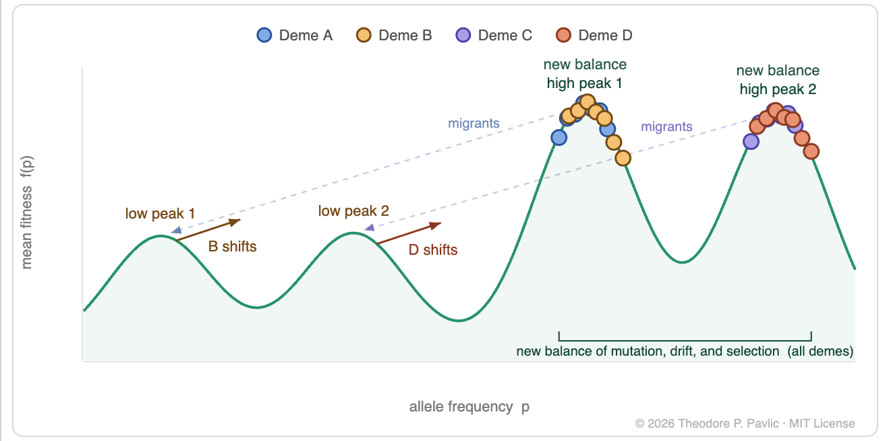
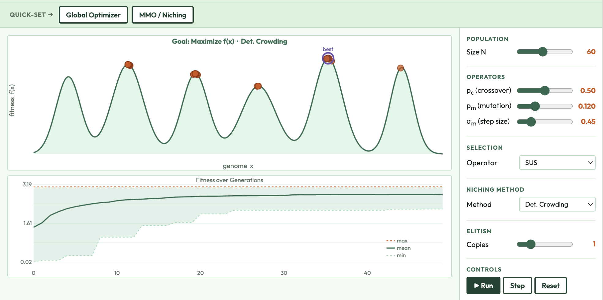
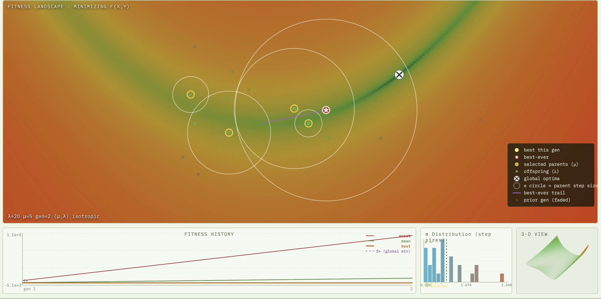
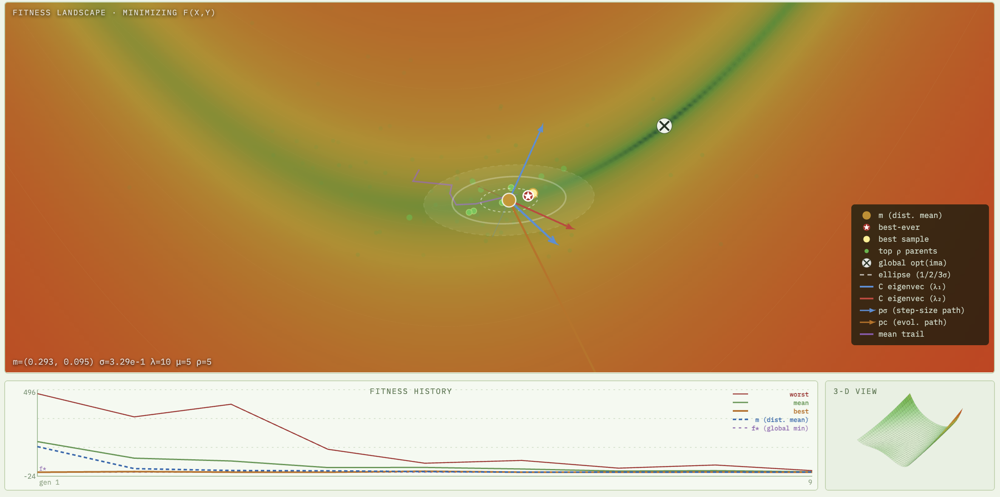

Evolution and Evolutionary Algorithms
-

Shifting Balance Theory — interactive explainer
Walk through Sewall Wright's three-phase Shifting Balance Theory: how genetic drift, selection, and interdemic migration help a metapopulation escape local fitness peaks.
-

Ideal Free Distribution — interactive explainer
Watch animals distribute across resource patches to equalize individual fitness — a behavioral ecology result that motivates fitness sharing in multi-modal genetic algorithms.
-

Evolution as Movement in a Drift Field — graphical explainer
Selection and drift purge diversity; mutation replenishes it. This figure frames the four forces of evolution as a field pushing populations toward fixation, motivating how to tune GA hyperparameters for a gradual shift from exploration to exploitation.
-

Genetic Algorithm Explorer — interactive explainer
Run a canonical GA on a 1-D multimodal landscape with niching, experiment with an island model / distributed GA, explore a 2-D optimization zoo, and watch a two-objective MOEA build a Pareto front in real time.
-

ES Explorer — interactive explainer
Run a (μ,λ)- or (μ+λ)-Evolution Strategy on a 1-D multimodal landscape and watch per-individual step sizes self-adapt through selection — no global update rule required.
-

CMA-ES Explorer — interactive explainer
Watch CMA-ES adapt its mean, step size, and full covariance matrix each generation — cumulative step-size adaptation and rank-1/rank-μ covariance updates visualized in real time on a 2-D landscape.